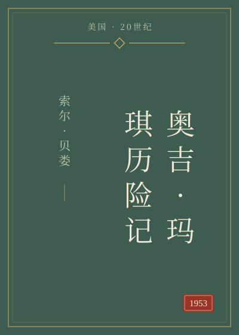
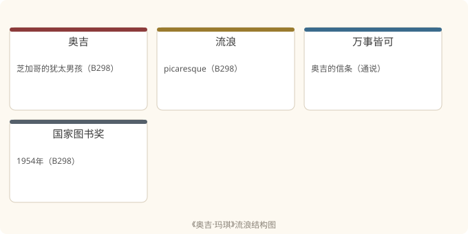

奥吉·玛琪历险记
一、基本信息
| 作者 | 索尔·贝娄 |
|---|---|
| 成书/出版 | 1953年（Britannica：The Adventures of Augie March published 1953——'won a National Book Award in 1954'） Saul Bellow — Encyclopaedia Britannica（百科全书） |
| 国别/地区 | 美国 |
| 时代 | 现当代 · 20世纪 |
| 体裁 | 长篇小说 |
| 语言 | 英语 |

《奥吉·玛琪》流浪结构图（主题·结构图）
二、创作背景
Britannica（B298）：'A picaresque story of a poor Jewish boy from Chicago, the novel tracks his progress'（芝加哥犹太穷孩子的流浪汉故事——B298）；'The novel won a National Book Award in 1954'（B298）。
作者（B298）：1976诺奖——'for the human understanding and subtle analysis of contemporary culture'；'cultural sophistication and the wisdom of the streets'构成其最大原创性（B298）。
三、内容脉络
奥吉从芝加哥底层到墨西哥、欧洲的流浪——'万物皆可尝试'的帕卡雷特（通说待核）。
四、主要人物表
| 人物 | 身份 | 说明 |
|---|---|---|
| 奥吉·玛琪 | 流浪者 | （通说待核） |
| 劳希奶奶 | 房主 | （通说待核） |
五、主题与艺术特点
- 流浪汉小说的现代转型（B298：picaresque story）。
- '反对屈从'的freedom（通说待核）。
- 犹太裔美国叙事（B298 语境：Jewish American writers）。
六、影响与评论
- Britannica：'won a National Book Award in 1954'（B298）。
Saul Bellow — Encyclopaedia Britannica（百科全书） - Britannica：'cultural sophistication and the wisdom of the streets……greatest originality'（B298）。
Saul Bellow — Encyclopaedia Britannica（百科全书）
七、阅读建议
难点
- 流浪汉体的长卷。
- 芝加哥犹太街景。
- 《奥吉·玛琪历险记》（人民文学出版社/上海译文版本，通说待核）。
- 英文原版。
贝娄入门首选。
八、待核实
- 1953年出版（Viking Press说）核对。
- 奥吉·玛琪/劳希奶奶人名核对。
- '拒绝屈从'（against submission）表述待核。
本页主要来源
索尔·贝娄的其他收录作品：奥吉·玛琪历险记